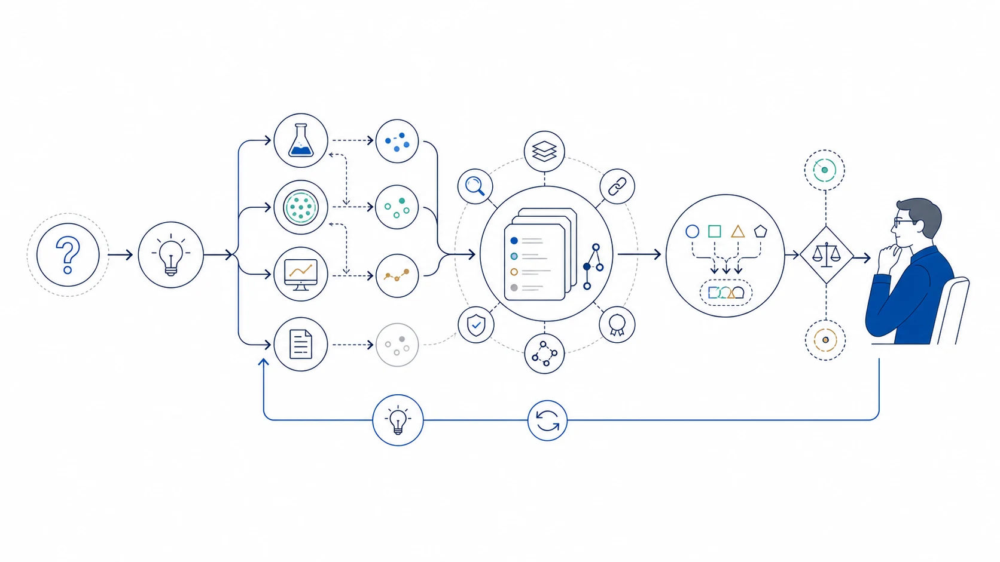

Research Notes
All views expressed here are my own.
Agents / Research Systems
Thoughts on AutoResearch
AutoResearch is the attempt to turn parts of research into an observable, reproducible loop while preserving the judgment that makes research meaningful.

The opportunity is not simply faster experimentation. It is a tighter and more inspectable feedback loop between questions, hypotheses, evidence, and revision.
Research as a Closed Loop
Many research activities already follow a recurring structure: identify a question, propose a hypothesis, design an experiment, examine the evidence, and decide what to try next. Agents can reduce the friction between these stages and shorten the path from an idea to its first meaningful empirical test.
Automation Does Not Remove Scientific Judgment
Not every measurable improvement is a meaningful discovery. Research also requires choosing worthwhile questions, recognizing confounders, interpreting negative results, and noticing when a benchmark has stopped representing the real objective. AutoResearch systems should make these decisions visible rather than hiding them inside an optimization loop.
Evidence and Provenance Matter
An autonomous research system should preserve the path that produced a result: hypotheses considered, code changes made, experiments run, failures encountered, data used, and criteria applied. Without this provenance, automation can accelerate activity while weakening scientific confidence. Reproducibility should be part of the system architecture, not a report assembled afterward.
The Laboratory Itself Can Learn
A longer-term possibility is a research environment that improves its own experimental practice. It could learn which tests are informative, identify repeated sources of error, allocate compute more effectively, and build reusable knowledge from unsuccessful experiments. In this view, AutoResearch is also research on how to design better research institutions in software.
Directions I Want to Explore
- Which research decisions can be delegated safely, and which require human judgment?
- How should an agent value negative or inconclusive results?
- Can a system distinguish benchmark optimization from scientific progress?
- What memory structure can accumulate knowledge across many experiments?
- How should credit and responsibility work in human–agent research teams?